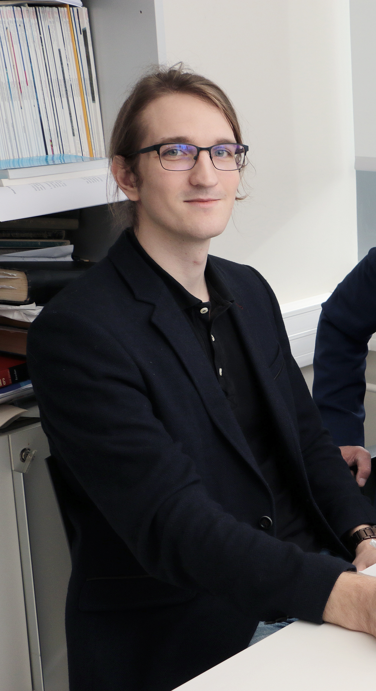

About me:
Hi! I'm currently a Postdoctoral researcher in the Max Planck Institute for the Physics of Complex Systems, studying non-linear time-series. I have a PhD from Tallinn University, Estonia in the field of physics, specifically stochastic processes. Safe to say, I enjoy extracting meaningful information from data, but most of all time-series.
I also take interest in programming. While I do my research mainly with Python, I'm interested in picking up HTML, CSS, and JavaScript as well, so I can better present my work and ideas, like on this website!